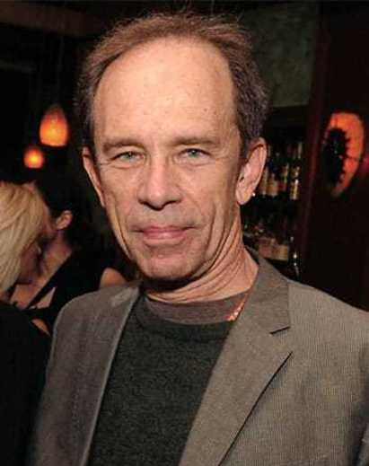
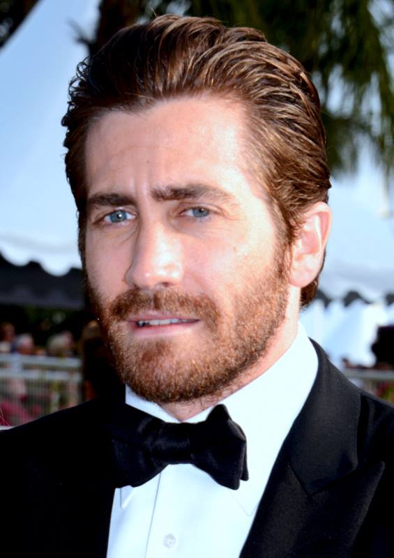

Naravno kao i svaki film Prisoners se našao na meti jednih od največih filmskih kritičara kao što je i Tod Mekarti a evo sta je i on rekao o filmu i glumcima:
Postoji osetljivost koju režiser Denis Villenueve i pisac Aaron Guzikovski naseljavaju iznoseći na ekran svoj najnoviji film „Zatvorenici“ iz Varner Bros-a. U glavnoj ulozi za Oskara, nominovanu za Oskara, u kojoj su Hugh Jackman, Jake Gillenhaal, Terence Hovard, Maria Bello, Viola Davis, o skarovka Melissa Leo i Paul Dano, ovo je pametno konstruisan i emocionalno odzvanjajući misteriozni triler koji je u potpunosti uživan.
Sadržaj je u potpunosti u prikolici. Kada dve mlade devojke nestanu, jedna pripada Keller-u i Grace (Jackman i Bello), druga Franklin-u i Nanci-u (Hovard i Davis), detektiv (Gillenhaal) koji neumorno pokušava pronaći tragovekoji bi mogli dovesti do prebivališta nestalih. Kada se mentalno hendikepirani Alek Jones (Dano) nađe blizu mesta nestanka bez čvrstih dokaza, Keller preuzima stvar u svoje ruke.
Moram reći da nikada nisam bio ovako hipnotiziran sa delima Hugha Jackmana i Jakea Gillenhaala. Jackman, koji je svjež od svoje početne nominacije za Toma Hoopera "Les Miserables", masovno je kapitalizirao. Približavajući se svom liku žestinom zbog koje je postao zvezda u franšizama „Ljudi Ks“, on se zakuca u svaku scenu, držeći publiku da nagađa o sopstvenim moralnim složenjima. Razdire scene na način na koji ga nikada nismo videli i naslaže njegov lik s puno ljubavi, empatije, tuge i besa. To je njegov najbolji dramski poduhvat koji je ikad uradio.
Kada je Jake Gillenhaal u pitanju, mnogi, i verovatno iz pravih razloga, gravitiraju njegovom radu u "Brokeback Mountain" Ang Lee-a kao njegovom blistavom trenutku u istoriji filma. Verujem da je zašao dublje u dela poput "Jarhead" i "Zodiac", ali to su bile samo površine onoga što on može da radi kao glumac. Kao detektiv Loki, Gillenhaal stoji čvrsto i visoko u jednoj od najlepših predstava u godini. Užasno pogubljen kao muškarac odvojen od stvarnih emocija, zatiče se misterijom oko dve nestale devojke. Takođe orkestrira ritmove i tikove koji podsećaju na visoko delo Joakuina Phoenika u prošloj godini u filmu "The Master".
Ono što je u filmu vrlo osvežavajuće je što nudi sjajan podsetnik na to koliko je Terence Hovard sjajan glumac. Činilo se da je glumac nominovan za Oskara zaobišao njegovu nominaciju za "Hustle and Flov" 2006. godine, slučajno iste godine, Gillenhaal je uhvatio svoj prvi, i sada je shvatio svoje mogućnosti kada bira dinamičnije i strasnije likove. U filmu koji se usredsređuje na njegovo učešće, Paul Dano nema previše toga da ponudi, ali je potpuno adekvatne forme.
Film, međutim, nije u potpunosti savršen. Dubinski scenario Aarona Guzikovskog nudi sjajnu misterioznu priču, prepunu preokreta, pomalo predvidljivih, ali tu ne zaostaje toliko. Njegova konstrukcija ženskih kolega, Marije Bello, Viole Davis i Melisse Leo, nije tako oštro ili glatko sastavljena kao što bih želela da budu. Svaka od njih ima po jednu „scenu“ koja nam daje motivaciju za njihov lik i pogled u njihovu filmsku psihu, međut im, neki su ubačeni prilično leno i uspevaju da na vreme zaustave priču.
Tehničke zasluge filma sve se nadovezuju na sposobnosti njegove glumačke ekipe. Roger Deakins, najkasnije kinematograf u ovom poslu, snima zapanjujuće portrete razgovora, vremena i scena koji nastavljaju da dokazuju njegovu blistavost u filmskom svetu. Rezultat filma maestralno postavlja Johann Johannsson, dok Joel Cok i Gari Roach montiraju film u besprekornom ritmu.
Nakon 153 minuta, film je detaljan, precizan i gotovo privlačan. Mislim da postoji kraći deo filma koji bi sigurno bio nominovani za najbolji film za ovogodišnje nagrade Oskar da postoji. Film bi i dalje mogao dobiti tu podršku onim što imaju sada, ali mislim da postoje aspekti koji članovi filma neće moći da zaobiđu. Visok nivo nasilja i scena mučenja ubrizganih u duže vreme mogao bi ljude držati na distanci. Jedna stvar koja se ne može poreći su velika dela Hjua Jackmana i Jakea Gillenhaala. Njih dvoje su ponudili obilje nezaboravnih predstava u svojoj filmografiji, ali njihov rad u „Zatvorenicima“ presečen je i razjasnio ono najbolje što su ponudili.
„Zatvorenici“ je veličanstveno ostvarenje za filmsku godinu. Temeljito, zagonetno i čisto neverovatno. Obavezno za ljubitelje filmova.
 